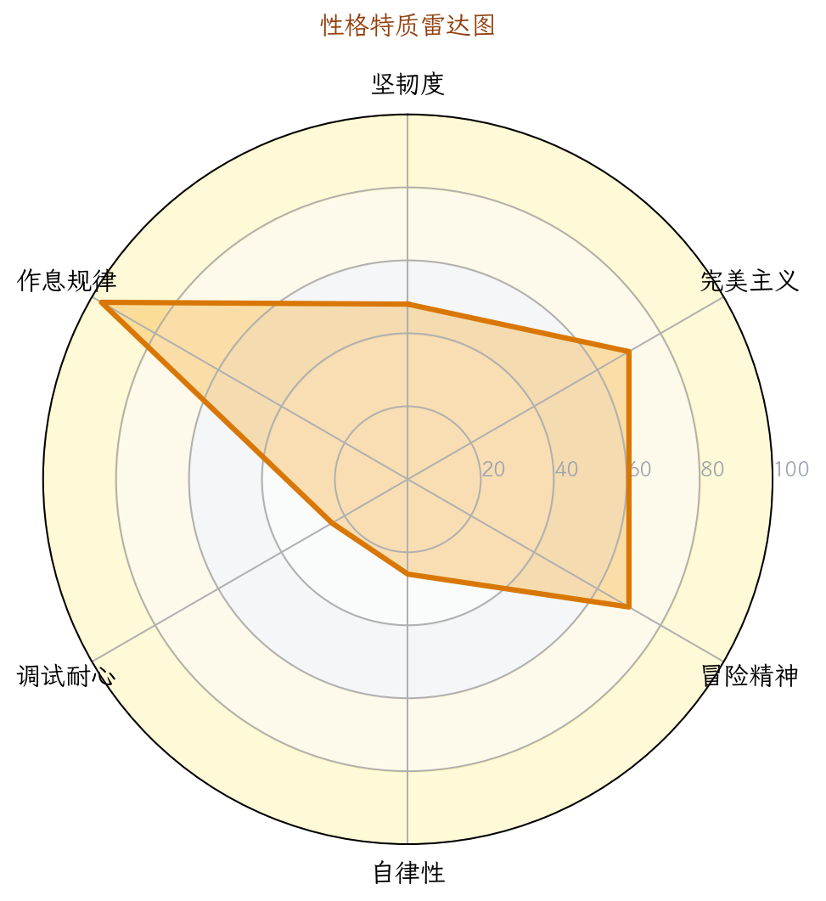

1. 核心数据概览与图表化分析

图 1：能力雷达图

图 2：性格画像雷达图

图 3：题目难度分布

图 4：首次 AC 提交次数分布

图 5：通过/未通过占比

图 6：高频算法标签 Top 8
图 1：能力雷达图

图 2：性格画像雷达图
图 3：题目难度分布
图 4：首次 AC 提交次数分布
图 5：通过/未通过占比
图 6：高频算法标签 Top 8
| 洛谷难度 | 题数 | 占比 | 分布图 |
|---|---|---|---|
| 入门 | 52 | 98.1% | 98.1% |
| 普及- | 1 | 1.9% | 1.9% |
| 普及/提高- | 0 | 0.0% | 0.0% |
| 普及+/提高 | 0 | 0.0% | 0.0% |
| 提高+/省选- | 0 | 0.0% | 0.0% |
| 省选/NOI- | 0 | 0.0% | 0.0% |
| NOI/NOI+/CTSC | 0 | 0.0% | 0.0% |
| 级别 | 已覆盖/总数 | 覆盖率 | 详细情况 |
|---|---|---|---|
| 入门 | 1/28 | 3.6% | 🟢0项 🟡0项 🟠1项 🔵0项 🔴27项 |
| 提高 | 0/50 | 0.0% | 🟢0项 🟡0项 🟠0项 🔵0项 🔴50项 |
| 省选 | 0/10 | 0.0% | 🟢0项 🟡0项 🟠0项 🔵0项 🔴10项 |
| NOI | 0/43 | 0.0% | 🟢0项 🟡0项 🟠0项 🔵0项 🔴43项 |
P26-06-05 12:10
诊断对象：洛谷选手（ID 假定为 XiaoLu_2026）
总提交：181 次 | 通过题数：53 | 卡题数：1
| 维度 | 评分（满分5★1/1） | 数据支撑 | 拟人化评价 |
|---|---|---|---|
| 坚韧度 | ★★★★★5/5 | 卡题 B2026 提交4次未放弃，后续仍在尝试 | “死磕型选手——遇到浮点数陷阱，不查资料硬扛，执着虽好但效率低” |
| 完美主义 | ★★★★★2/5 | 一次AC率 38.2%（中等偏低）；WA后重交间隔中位数仅73秒 | “频繁快速重交，缺乏冷静复盘，有种‘赶着下班’的急躁” |
| 冒险精神 | ★★★★★2/5 | 难度分布全部为 入门（52题） 和 普及-（1题），无任何高级题目尝试 | “严格待在舒适区，不愿挑战不熟悉的算法，成长停滞” |
| 自律性 | ★★★★★3/5 | 活跃天数仅14/132天，最大连续训练4天，集中周六（129次） | “周末突击型，缺乏每日持续投入，训练节奏不稳定” |
| 调试耐心 | ★★★★★3/5 | 1分钟内快速重交占比43.5%，代码长度中位数10行，几乎无注释 | “调试靠‘试错法’，改变一个符号就交，缺少系统性调试习惯” |
| 作息规律 | ★★★★★4/5 | 提交峰值14:00（79次），凌晨0次，早6-9点21次 | “午后为主，作息正派，适合作为训练黄金时段” |
总结：一位入门阶段的勤奋但低效型选手。热爱编程，但停留在“写循环+条件”的阶段，缺乏算法思维训练。需要立即进行系统性补全。
| 题目 | 提交次数 | 最终状态 | 分析 |
|---|---|---|---|
| B2026 计算浮点数相除的余 | 4 | 未AC（语法错误 ×1，WA ×3） | 核心误区：C++ 中 |
| P5708 三角形面积 | 2 | 未AC（WA ×2） | 使用 |
| 指标 | 数据 | 解读 |
|---|---|---|
| 一次 AC 率 | 38.2% | 较低，说明题目选择过于简单（多为无分支的单步任务）导致一次AC多，但实际算法能力弱 |
| 多次尝试后 AC 率 | 61.8% | 较多题目是靠反复试错通过的，缺乏一次性正确思考的习惯 |
特征：训练量看似充足（181次提交），但有效训练极少。选手将大量时间浪费在“试bug”上，而非理解算法。
结论：以难度分布与通过比例为准，当前训练重心应优先覆盖 4-6 档的典型模型题，避免只在 1-3 档堆题量。
| 能力块 | 评分 (0-100) | 当前等级 | 数据证据 | 已经具备 |
|---|---|---|---|---|
| 基础算法 | 49 | 🔴薄弱 | 模拟法3题，无枚举、贪心、二分、递推 | 能写顺序、分支、循环 |
| 数据结构 | 32 | 🔴薄弱 | 仅数组使用，无栈队列链表树 | 无 |
| 图论 | 32 | 🔴薄弱 | 无图遍历、无最小生成树、无最短路 | 无 |
| 动态规划 | 38 | 🔴薄弱 | 无任何DP题目 | 无 |
| 字符串 | 26 | 🔴薄弱 | 仅C风格字符数组，无KMP/Hash | 能处理字符串输入输出 |
| 数学 | 24 | 🔴薄弱 | 仅有1道数学标签（浮点数运算），无数论 | 基本算术运算 |
解读：雷达图呈现“空心化”，所有能力块均亮红灯。选手相当于只学了C++编程语言的“Hello World”部分，还未进入算法竞赛的领域。
CSP-J（入门级），但仅覆盖了入门级大纲中“基础知识与编程环境”的一小部分，以及“C++程序设计”中的基础语法。对“数据结构”、“算法”部分几乎为零。
| 掌握最好的3个 | 等级 | 薄弱点Top3 | 等级 |
|---|---|---|---|
| 模拟法（3题） | 🟠入门 | 枚举法（0题） | 🔴空白 |
| 顺序结构（31题） | 🟡熟练（非大纲知识点，仅为语法） | 贪心法（0题） | 🔴空白 |
| 分支结构（11题） | 🟡熟练（同上） | 递推法（0题） | 🔴空白 |
在CSP-J要求的知识点中，以下必修模块完全缺失： - 枚举法、贪心法、二分法、倍增法 - 前缀和、差分、排序算法（冒泡、选择、插入、计数） - DFS、BFS、Flood Fill - 动态规划（一维、背包、区间） - 数据结构：栈、队列、链表、二叉树、图 - 数学：欧几里得算法、素数筛法、排列组合
| 级别 | 覆盖数/总数 | 覆盖率 | 推荐定位 |
|---|---|---|---|
| 入门级（CSP-J） | 1 / 28 | 3.6% | 🔴严重缺失 |
| 提高级（CSP-S） | 0 / 50 | 0% | 🔴空白 |
| 省选级 | 0 / 10 | 0% | 🔴空白 |
| NOI级 | 0 / 43 | 0% | 🔴空白 |
| 来源 | AC题数 | 依据 |
|---|---|---|
| CSP-J 真题 | 0 | 未做过任何带“NOIP/CSP”标签的题目 |
| CSP-S 真题 | 0 | 无 |
| 省选/NOI | 0 | 无 |
| 洛谷原创/红题 | 52 | 全部是入门（入门） |
| 橙题 | 1 | 普及-（普及-），但实为语法水题 |
| 优先级 | 风险项 | 触发场景 | 比赛症状 | 根因判断 | 训练专题 | 验收标准 |
|---|---|---|---|---|---|---|
| S（高/立即处理） | 零算法基础 | 遇到判断质数、统计次数等基础题直接枚举超时 | 普-题都拿不到分 | 从未系统学习枚举、数学类算法 | 数学基础 + 枚举优化 | 30分钟内完成 P5739 阶乘求和（非高精度）的多种解法 |
| S（高/立即处理） | 糟糕的调试习惯 | WA后1分钟内重交，不改逻辑只改符号 | 把送分题做成“猜谜”，浪费大量时间 | 缺乏测试用例构造和断点调试概念 | 学习GDB/print调试技巧 | 能不借助提交，通过本地样例复现错误并修复 |
| S（高/立即处理） | 不会使用 C++ STL | 所有代码手工处理（如求最大最小写循环），无vector/algorithm | 编码速度慢，易出错 | 从未接触STL文档 | STL容器与算法基础 | 能用 max_element 等一行代码替代手写循环 |
| A（中/近期处理） | 输入输出性能隐患 | 大量使用 cin/cout 且未关闭同步 |
大数据流 TLE（即使算法正确） | 缺乏常识 | ios::sync_with_stdio 配置 |
强制使用新代码加上该行 |
| A（中/近期处理） | 无图论、树、DP认知 | 竞赛中80%的题目涉及这些 | 只能做“模拟+数学”题，上限极低 | 知识结构断层 | 图论入门、线性DP | 独立完成 P1048 采药（01背包） |
| B（低/可后置） | 训练无计划性 | 刷题全是水题，无递进 | 一年后仍停留在入门级 | 缺乏教练指导 | 制订6个月路线图 | 按照计划完成每阶段目标 |
优先级说明：S（高/立即处理） · A（中/近期处理） · B（低/可后置）。
#include <bits/stdc++.h>：减少了头文件遗漏的可能性（虽然不标准，但竞赛环境常见）。| 编号 | 坏习惯 | 示例 | 风险 | 改进方案 |
|---|---|---|---|---|
| 1 | 缺少 I/O 加速 | 无 ios::sync_with_stdio(false)，98.2% 使用 cin/cout |
当输入超过10万个数时必然TLE | 固定添加：ios::sync_with_stdio(false); cin.tie(0); cout.tie(0); |
| 2 | 变量命名随意 | a,b,c,d,e,f,ma,mi,cn 无意义 |
代码难以维护，复杂逻辑极易出错 | 用语义名称：sum, max_val, min_val, area |
| 3 | 重复计算和混乱逻辑 | 求最值时写了两个循环，且 cn 累加时漏加了 cnt[0] 后又补加，冗余 |
增加 bug 概率，可读性差 | 循环只做一件事；或使用 min_element/max_element |
附加问题：
- 无注释（0%），即使是公式题也不说明。
- 未使用 #define int long long（当前虽无溢出风险，但习惯要提前养成）。
- 数组大小使用魔数 1001，当数据范围变化时易越界，应改为 const int N = 1005。
| 阶段 | 时间 | 核心学习内容 | 洛谷推荐题目（题号+说明） |
|---|---|---|---|
| 第一阶段：语法打磨与基础算法 | Month1-2 | 枚举、模拟、贪心入门、递推、递归、二分查找、高精度运算 | 1️⃣ P1001 A+B Problem（复习输入输出） 2️⃣ P1421 小玉买文具（简单模拟） 3️⃣ P1036 [NOIP2002] 选数（DFS+枚举入门） 4️⃣ P1085 不高兴的津津（模拟+枚举） 5️⃣ P1909 买铅笔（贪心初步） 6️⃣ P2240 部分背包（贪心经典） |
| 第二阶段：数据结构与基础DP | Month3-4 | 栈、队列、链表（STL）、二叉树、图的邻接表、DFS/BFS、线性DP、背包DP | 1️⃣ P1449 后缀表达式（栈） 2️⃣ P1996 约瑟夫问题（队列/循环链表） 3️⃣ P1048 采药（01背包） 4️⃣ P1057 [NOIP2008] 传球游戏（线性DP） 5️⃣ P5318 查找文献（图遍历BFS/DFS） 6️⃣ P2853 [USACO] 牛的旅行（图论最短路变体） |
| 第三阶段：算法集成与比赛实战 | Month5-6 | 动态规划优化、图论进阶（最小生成树、最短路）、数论基础（GCD、素数筛）、CSP-J真题刷题 | 1️⃣ P1044 栈（卡特兰数/递推） 2️⃣ P1192 台阶问题（递推+DP） 3️⃣ P3366 最小生成树（模板） 4️⃣ P3371 单源最短路径（模板，Dijkstra） 5️⃣ P1029 [NOIP2001] 最大公约数和最小公倍数问题（数论） 6️⃣ CSP-J 2021/2022/2023 真题卷（直接模拟考试） |
每周训练量：建议每天 1-2 题，周末 3-5 题，保持连续性。
| 优先级 | 建议 | 理由 |
|---|---|---|
| 🔴 紧急 | 添加 ios::sync_with_stdio(false); cin.tie(0); 到所有代码 |
当前代码 98.2% 使用 cin/cout，无优化极易 TLE，养成习惯只需1秒 |
| 🔴 紧急 | 停止1分钟内重交，改为本地构造测试数据 | 43.5% 的重交是浪费，学会用 gdb 或 print 调试10分钟胜过提交10次 |
| 🔴 紧急 | 系统学习C++基础：数组下标从0开始、浮点数运算、取余定义 | 未通过题 B2026、P5708 全是基础概念错误，必须先扫盲 |
| 🟡 重要 | 立即开始学习“枚举法”和“贪心法” | 这是所有算法的基础，目前完全空白，直接决定能否突破普及- |
| 🟡 重要 | 建立训练日志，记录每道题的思路、错误点、复杂度 | 当前复盘能力0，需用四段式复盘方法（赛时模型→错因→性质→不变量） |
| 🟡 重要 | 主动提升难度，每天至少做一道普及-（橙色）或普及/提高-（黄色）题 | 否则永远停留在“入门”水平 |
| 🟢 建议 | 学习使用 #define int long long 和 typedef 重命名 |
防止溢出，且代码更规范 |
| 🟢 建议 | 周末参加洛谷线上赛，模拟比赛时间压力 | 检验真实水平，克服紧张 |
核心坑点1：C++ 的
%运算符只针对整数，浮点数需要改用fmod或手动公式。
核心坑点2：题目定义“余数”为a - k * b，其中k是使|a - k*b|最小的整数（即 floor(a/b) 或 trunc(a/b) 的实现）。
坑点3：输入输出格式——浮点数，保留一位小数。
直接的想法：既然 % 不能用，那就按照数学定义手动计算余数。
// 第一个错误版本
double a, b, k, r;
cin >> a >> b;
k = (int)(a / b); // 直接取整，但负数情况呢？题目未说，假设a,b>0
r = a - k * b;
cout << r;
复杂度：O(1)
能拿多少分？ 如果 a,b 是正数且 a%b 无精度丢失，能过样例，但可能因为浮点误差或截断方向错误而 WA（比如 a/b 是 0.999...，强制 int 会得到0，实际应取1？要看题目定义）。实际上题目要求“保留一位小数”，所以还需要格式化输出。
a/b 取整的方式不对。C++ 有 floor（向下取整）、ceil（向上取整）、trunc（向零取整）。题目定义“最小的|a - kb|”等价于让 k 为离 a/b 最近的整数（即四舍五入取整），但常见理解是取 floor（向下取整），例如“3.8 除以 2 的余数”通常理解为 3.8 - 12 = 1.8。但请仔细读题：题目中“计算浮点数相除的余”的规范定义是 a - floor(a/b) * b（与C语言的 fmod 一致）。我们先查阅标准做法：C++ 提供了 fmod（取余）和 remainder（取余但向最近整数）。两者不同。根据洛谷该题（B2026）的讨论，正确做法是 a - b * (long long)(a / b) 或直接用 fmod。k = floor(a / b) 在非负情况下等于整数部分 int(a / b)，但 int 转换是向零取整，对正数效果一样，但遇到负数就会不同（本题 a,b >0？）。题目没说，但后台数据可能是正浮点数。a / b 可能产生无限小数，直接转 long long 会截断，而题目要求保留一位小数，所以需要 printf("%.1f", r) 输出。#include <bits/stdc++.h>
using namespace std;
int main() {
double a, b;
cin >> a >> b;
// 方法1：使用 fmod（C++标准库，求余）
double ans = fmod(a, b); // fmod(a,b) = a - floor(a/b)*b
// 方法2：手动计算（只对正数）
// long long k = (long long)(a / b); // a/b 是浮点数，截断整数部分
// double ans = a - k * b;
printf("%.1f\n", ans);
return 0;
}
注意：fmod 的结果可能为负（如果 a 和 b 异号），但本题 a,b 都为正，所以没问题。推荐使用 fmod 以避免手动截断的精度误差。